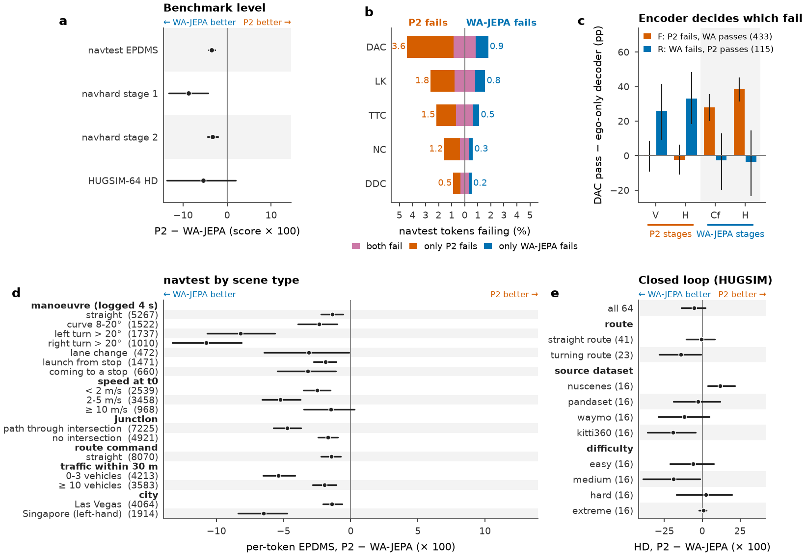
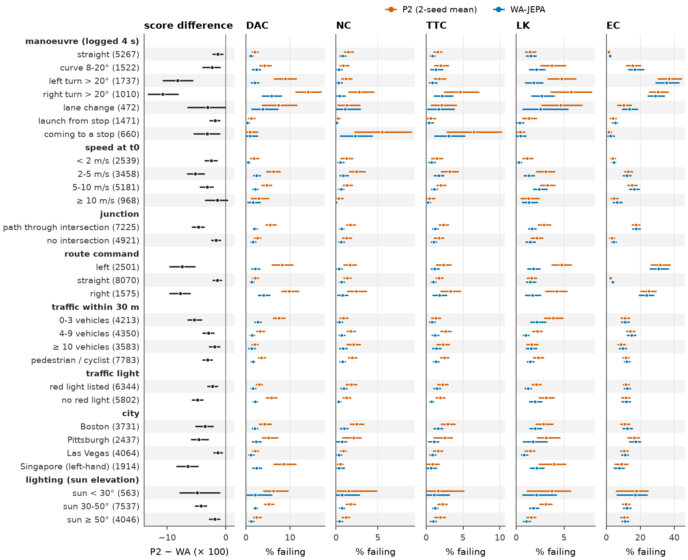
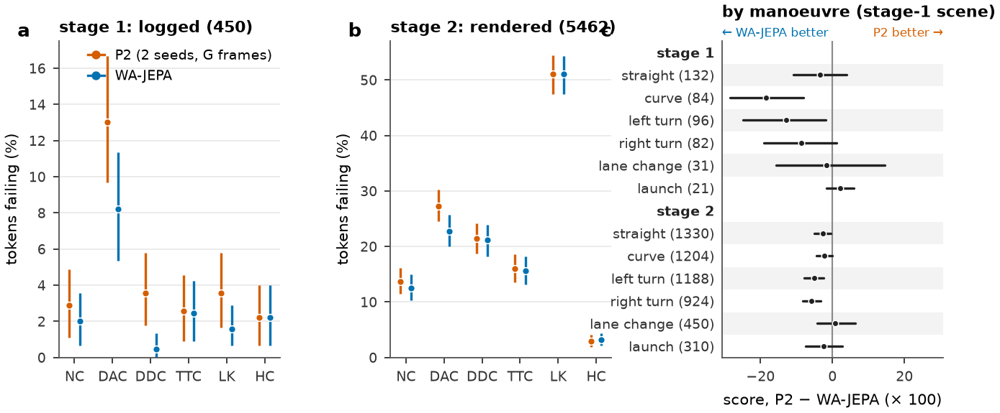
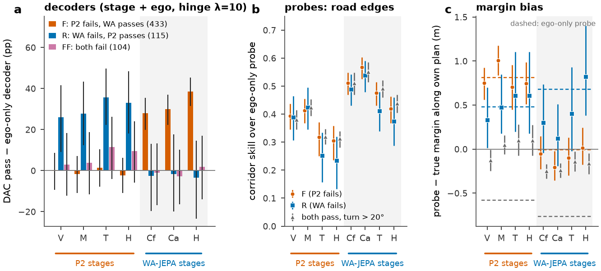
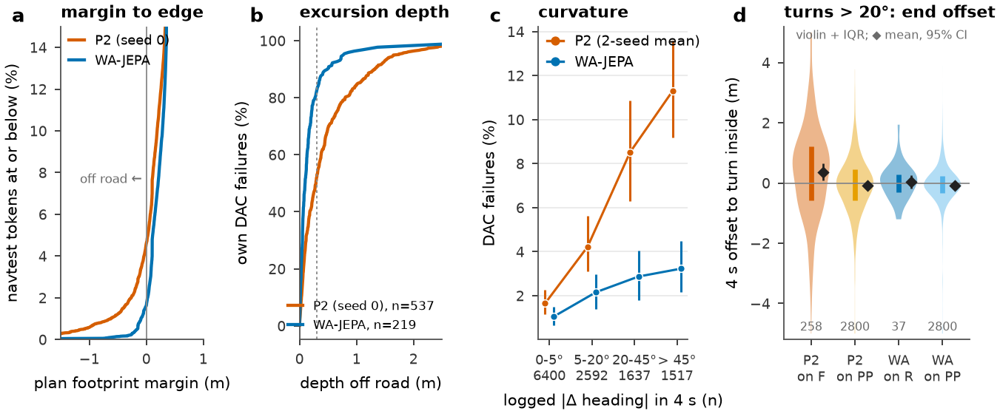
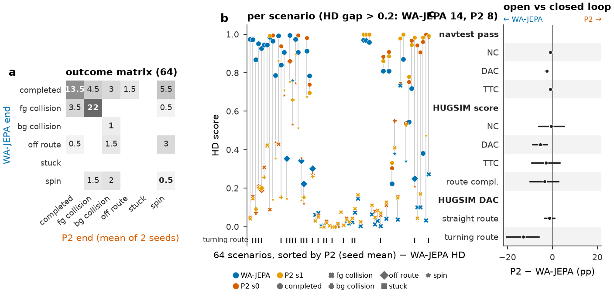
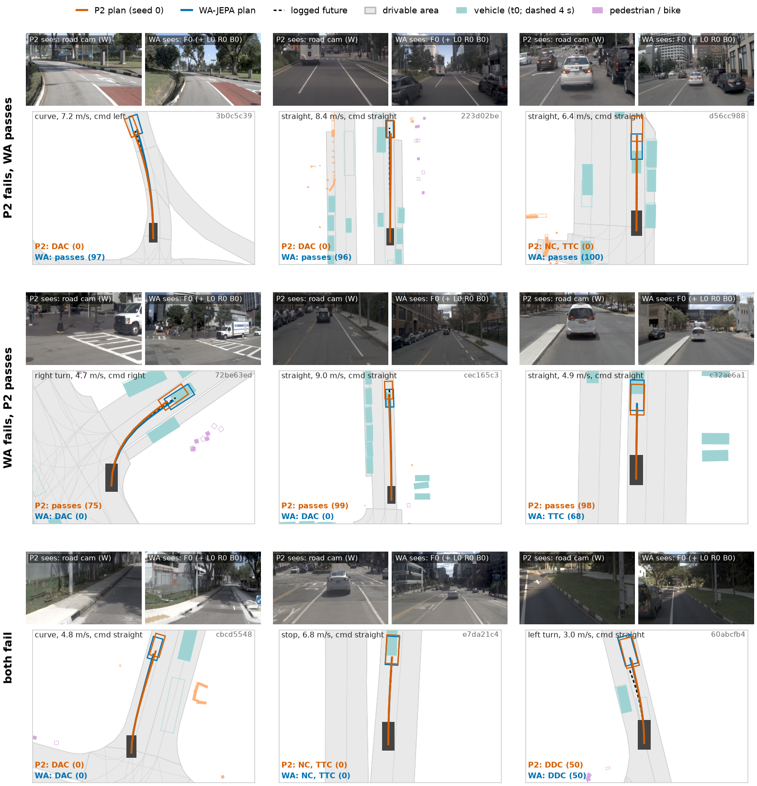

Where P2 and WA-JEPA work, where each fails, and at which stage
Joint diagnosis, 2026-10-06. P2 = op_parity P2-F (Cinque 382M, comma vision frozen, ego / pose / command inputs, protocol W frames; 2 seeds). WA-JEPA = released checkpoint (V-JEPA 2.1 ViT-L + MMDiT, one run). Builds on dac-localize.md (decision 147) and the op_parity gap page. No model was re-run; all numbers come from stored plans, devkit sub-scores, op_probe features / probes / decoders, and HUGSIM run logs.
Summary
- WA-JEPA is ahead on every navtest scene type; the gap is a turning problem. Per-token EPDMS P2 − WA is -1.4 [-2.2, -0.8] on straight driving and -8.2 [-10.7, -5.7] / -10.8 [-13.3, -8.1] on left / right turns (× 100). DAC failures rise with curvature for P2 (1.6% below 5° → 11.3% above 45°) and barely for WA (1.0% → 3.2%). Near parity: straight, ≥ 10 m/s (-1.5 [-3.5, +0.3]), Las Vegas (-1.4 [-2.1, -0.6]). Largest non-manoeuvre gaps: Singapore, left-hand traffic (-6.5 [-8.4, -4.7]), near-empty roads with 0-3 vehicles (-5.4 [-6.5, -4.1], i.e. turns at open junctions).
- Where P2 is not worse. Closed loop on straight routes: HUGSIM HD P2 − WA -0.6 [-10.5, +8.2] (× 100, 41 scenarios); on the nuScenes scenes P2 is ahead, +11.9 [+3.6, +21.6]. Open loop: extended comfort (EC fail rate P2 − WA -0.5 [-1.0, +0.1] pp), launch scenes on navhard stage 1, lane changes on navhard stage 2 (both CIs include 0). No navtest scene type has P2 ahead.
- Each model's failures are fixed at its own encoder (mirror of decision 147, point 4). A fresh decoder (stage + ego, drivable hinge) on P2's vision tokens passes DAC on P2's failure set F no more often than an ego-only decoder (-0.2 [-9.3, +8.6] pp), while on WA-JEPA's failure set R it gains +26.1 [+9.2, +41.6] pp. The same holds the other way: WA's front-encoder decoder gains +27.9 [+19.9, +35.5] pp on F and -2.6 [-19.7, +13.0] pp on R; WA's head hidden +38.6 [+31.5, +45.4] vs -3.5 [-23.4, +14.5]. On the tokens both fail (FF), no stage of either model adds anything over ego state. Caveat: F and R are each selected by one model failing and the other passing, which inflates the cross-set gains (regression to the mean); the readable part is that every stage of the failing model sits at the ego-only level on its own failure set.
- P2's DAC failures are in the plan; most of WA-JEPA's arise only in the tracker replay. When P2 fails DAC its raw plan footprint already leaves the road in 63.7 [57.8, 69.2]% of cases; for WA only 23.3 [15.7, 31.8]%. In the devkit's LQR replay 59.8 [51.4, 67.6]% of WA's DAC failures are tracker-only and 82.2 [74.8, 88.9]% are shallower than 0.3 m (median 10 cm); P2: 30.4 [24.8, 36.4]% and 52.0 [46.8, 57.8]% (median 29 cm).
- P2's specific turn failures cut the corner. On turns > 20° where P2 fails and WA passes, P2's 4 s end point lies +0.36 [+0.08, +0.66] m toward the inside of the logged turn; on turns both pass it lies -0.09 [-0.16, -0.02] m (slightly wide). WA on its own failures: +0.04 [-0.18, +0.25] m. Tokens both fail are the opposite: both run wide (-0.33 [-0.66, +0.01] / -0.41 [-0.88, -0.08] m).
- The open-loop deficit carries into closed loop where the route turns. HUGSIM HD gap is -5.5 [-13.7, +2.0] overall (n.s., as in decision 144), -14.1 [-28.3, -0.7] on the 23 scenarios whose route turns ≥ 30°, with DAC -12.9 [-20.5, -6.0] there and -1.2 [-3.6, +1.0] on straight routes. How runs end: P2 completes 17.5 vs 28, spins 9.5 vs 4, bg-collides 7.5 vs 1; WA leaves the route 5 vs 1.5. Foreground collisions are shared (28 vs 26; 22 scenarios end that way for both).
- navhard. Stage 1 (logged) P2 − WA -8.8 [-13.2, -4.3], from DAC (+4.8 pp failures), DDC (+3.1) and EP; stage 2 (rendered) -3.3 [-4.5, -2.1], from DAC (+4.5) and EP (-8.2 [-9.1, -7.4]): in synthetic follow-up states P2 also drives too slowly. Turns are the worst manoeuvre in both stages.
Overview

1. Failure taxonomy by sub-metric and scene type
navtest, 12 146 tokens, 136 logs. Rates are the share of tokens with the sub-score below 1 (P2: mean of its two seeds); the three right-hand columns split tokens by P2 seed 0 vs WA. Scene attributes: logged 4 s motion (manoeuvre classes in Method), ego speed, a path through an INTERSECTION polygon, the route command, agents within 30 m, a red light listed for the frame, city, and the sun elevation at the log's time (navtest has no night frames; weather is not labelled in nuPlan).
| gate | P2 fail % | WA fail % | P2 − WA (pp) | only P2 % | only WA % | both % |
|---|---|---|---|---|---|---|
| DAC | 4.3 [3.5, 5.2] | 1.8 [1.4, 2.2] | +2.5 [+1.8, +3.3] | 3.56 | 0.95 | 0.86 |
| NC | 1.5 [1.1, 2.0] | 0.6 [0.4, 0.9] | +0.9 [+0.6, +1.3] | 1.21 | 0.27 | 0.35 |
| TTC | 2.1 [1.6, 2.6] | 1.1 [0.8, 1.4] | +1.0 [+0.6, +1.4] | 1.51 | 0.46 | 0.65 |
| LK | 2.6 [2.1, 3.1] | 1.6 [1.2, 1.9] | +1.0 [+0.6, +1.5] | 1.83 | 0.77 | 0.79 |
| DDC | 0.8 [0.5, 1.2] | 0.5 [0.2, 0.9] | +0.3 [+0.1, +0.5] | 0.54 | 0.20 | 0.34 |
| TLC | 0.3 [0.1, 0.4] | 0.1 [0.1, 0.2] | +0.1 [+0.1, +0.2] | 0.14 | 0.02 | 0.12 |
| HC | 1.6 [1.2, 2.2] | 1.7 [1.2, 2.2] | -0.0 [-0.1, +0.0] | 0.02 | 0.07 | 1.62 |
| EC | 11.5 [9.9, 13.0] | 12.0 [10.4, 13.5] | -0.5 [-1.0, +0.1] | 2.18 | 2.67 | 9.28 |


| navhard | stage 1 P2 | stage 1 WA | stage 2 P2 | stage 2 WA |
|---|---|---|---|---|
| NC | 2.9 [1.1, 4.9] | 2.0 [0.7, 3.6] | 13.7 [11.4, 16.1] | 12.5 [10.2, 15.0] |
| DAC | 13.0 [9.7, 16.7] | 8.2 [5.3, 11.3] | 27.3 [24.5, 30.2] | 22.8 [20.0, 25.7] |
| DDC | 3.6 [1.8, 5.8] | 0.4 [0.0, 1.3] | 21.4 [18.7, 24.1] | 21.1 [18.2, 24.0] |
| TTC | 2.6 [0.9, 4.6] | 2.4 [0.9, 4.2] | 16.0 [13.5, 18.6] | 15.6 [13.1, 18.2] |
| LK | 3.6 [1.7, 5.8] | 1.6 [0.7, 2.9] | 51.1 [47.5, 54.4] | 51.1 [47.5, 54.3] |
| EP | 80.4 [78.2, 82.5] | 84.4 [82.2, 86.4] | 74.5 [72.8, 76.1] | 82.6 [81.3, 84.0] |
EP row: mean ego-progress (× 100), not a failure rate. Score: stage 1 P2 73.1 [69.3, 76.7] vs WA 81.9 [78.5, 85.0]; stage 2 44.9 [42.8, 47.1] vs 48.2 [46.0, 50.5]. Clusters: 225 scene groups.
2. Stage localisation in both directions
Sets as in dac-localize.md, on DAC: F = P2 seed 0 fails, WA passes (433); R = WA fails, P2 passes (115); FF = both fail (104); PP-turn = both pass with a logged turn > 20°. Stages: P2 V (current vision tokens), M (after adapter bias and token MLPs), T (temporal summary), H (plan-head hidden); WA Cf (front-view encoder, newest tubelet, pooled like V), Ca (all views), T (trajectory-head input), H (its last hidden). Decoders: 2-layer MLP on [stage, ego], imitation + drivable hinge (λ = 10), trained on navtrain, scored with the devkit.

| decoder lift over ego-only (pp), hinge λ = 10 | F | R | FF | PP-turn |
|---|---|---|---|---|
| P2-V | -0.2 [-9.3, +8.6] | +26.1 [+9.2, +41.6] | +2.9 [-12.2, +18.4] | +12.5 [+8.2, +16.4] |
| P2-M | -1.6 [-10.9, +7.1] | +27.8 [+12.3, +43.4] | +3.8 [-11.5, +18.8] | +13.1 [+8.5, +17.4] |
| P2-T | +1.4 [-7.9, +10.4] | +35.7 [+22.3, +49.6] | +11.5 [-4.2, +26.3] | +14.2 [+9.5, +18.3] |
| P2-H | -2.3 [-10.9, +6.3] | +33.0 [+18.2, +48.3] | +9.6 [-5.8, +24.1] | +16.1 [+11.4, +20.2] |
| WA-Cf | +27.9 [+19.9, +35.5] | -2.6 [-19.7, +13.0] | -1.0 [-16.8, +13.2] | +16.1 [+11.3, +20.6] |
| WA-Ca | +30.0 [+22.3, +37.0] | -1.7 [-19.8, +17.6] | -2.9 [-16.3, +10.1] | +15.0 [+10.2, +19.3] |
| WA-H | +38.6 [+31.5, +45.4] | -3.5 [-23.4, +14.5] | +1.9 [-14.0, +17.0] | +18.3 [+13.7, +22.5] |
Imitation-only decoders give the same pattern (P2-V on F +6.5 [-3.4, +16.1], on R +31.3 [+14.7, +47.3]; WA-Cf on F +33.3 [+24.7, +41.4], on R +1.7 [-13.9, +16.5]). Margin bias (probe − true footprint margin along the model's own plan, m): P2-V on F +0.75 [+0.56, +0.93] vs ego-only +0.81 [+0.43, +1.17]; WA-Cf on R +0.30 [-0.04, +0.73], WA-H on R +0.82 [+0.38, +1.40] vs ego-only +0.68 [+0.17, +1.18]. Reading: P2's failures are encoder-level by both readouts; WA's are encoder-level by the decoder readout, while its front encoder still carries some road-edge information on R that the head hidden no longer shows (n = 115, wide CIs).
3. Geometry of the failures

Margins: smallest signed distance of the ego footprint (4 corners, plan linearly interpolated to 0.1 s) to the scorer's drivable polygons (ROADBLOCK, INTERSECTION, CARPARK_AREA), 0.5 m SDF labels of opb_labels.py. Depth: largest corner distance outside those polygons along the devkit's LQR replay (opb_score.py), on the op_probe eval tokens (F ∪ R ∪ FF ∪ 1 500 random PP); both models' replays reproduce their devkit DAC on 100% / 100% of tokens. End offset: lateral offset of the plan's 4 s pose from the logged 4 s pose, along the logged pose's normal, signed + toward the inside of the logged turn.
4. Closed loop: HUGSIM 64

exam preset; P2 = mean of seeds s0 / s1 (one run each), WA-JEPA one run (decision 138), single runs vary by about 0.2 HD per scenario (decision 144), so per-scenario differences below 0.2 are not read. Route turn = range of the recorded route heading. spec-preset counts in hugsim_full.md.
5. Paired cases per quadrant

Selection rule (fixed before looking at plans): a token 'fails' for a model when any of NC, DAC, DDC, TLC, TTC is below 1 (P2 = seed 0, the plan that is drawn; both P2 seeds must agree). Quadrants: P2 fails & WA passes, WA fails & P2 passes, both fail. Eligible: logged speed > 2 m/s, label raster ok, WA plan present. Within a quadrant, the failing sub-metric of the token is its first failing gate in the order above; each quadrant takes 3 tokens drawn uniformly at random (numpy seed 0) from the eligible set, stratified so that the drawn sub-metrics follow the quadrant's own sub-metric frequencies (largest-remainder rounding), distinct logs. No look at the plans before drawing. Drawn: P2 fails, WA passes / DAC 3b0c5c39, P2 fails, WA passes / DAC 223d02be, P2 fails, WA passes / NC d56cc988, WA fails, P2 passes / DAC 72be63ed, WA fails, P2 passes / DAC cec165c3, WA fails, P2 passes / TTC c32ae6a1, both fail / DAC cbcd5548, both fail / NC e7da21c4, both fail / DDC 60abcfb4.
Method and caveats
- Manoeuvre classes from the logged 4 s future (priority order): stationary (v0 < 0.5 m/s, path < 1 m), launch (v0 < 1.5, end speed > 2.5), stop (v0 > 2.5, end < 0.5), left / right turn (|Δ heading| > 20°), lane change (|Δ heading| < 8°, |lateral| > 2 m, path > 10 m), curve (8-20°), straight. navhard stage-2 tokens have no logged future and take the class of their scene group's stage-1 token.
- CIs: 95% percentile cluster bootstrap, B 2 000 (navtest logs, navhard scene groups, HUGSIM scenarios). Strata overlap across groups; no multiplicity correction; differences whose CI excludes 0 in one of ~30 strata are descriptive.
- F / R / FF are defined on P2 seed 0 as in decision 147; the taxonomy uses the 2-seed mean. Decoder and probe readouts are DAC-only.
- Inputs differ (WA: 4 cameras, 2 Hz history; P2: front cameras, protocol W). WA-JEPA is a single run on every benchmark.
- The case figure shows P2's current road frame only (it also sees the wide camera and 8 history slots); GIF-style context is on the op_parity gap page.
Reproduce: experiments/op_probe/scripts/opj_build.py (box: attrs / table / cases / export / frames; devkit replays via
opb_score.py), then .venv/bin/python experiments/op_probe/scripts/opj_figs.py --cases DIR (Mac). Per-token tables (gitignored results/joint/data/, from
$DATA_DIR/runs/op_probe/joint/ on the box), every number on this page in stats.json.